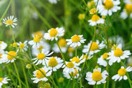

<center></center>
<body background="q.jpeg" width="800" height="900" text="black">
<b><p class="description" style="color:red">HISTORY OF MATRICARIA CHAMOMILLA</p></b><br>
<br>Matricaria chamomilla, also known as German chamomile, is a member of a very wide range of different species belonging to Asteraceae family. Chamomile originated from Europe and western Asia, and is also found in Australia and North America.
<b><p class="description" style="color:red">USES OF MATRICARIA CHAMOMILLA</p></b><br>


<center><br>digestive disorders

<center><br> conjunctivitis

<center><br> dysmenorrhea

<center><br> cold

<center><br> cough

<center><br>kidney stones

<center><br> eye infection
<\center>
<b></b>

<center><a href="tulsi.html">home<\a><button>
